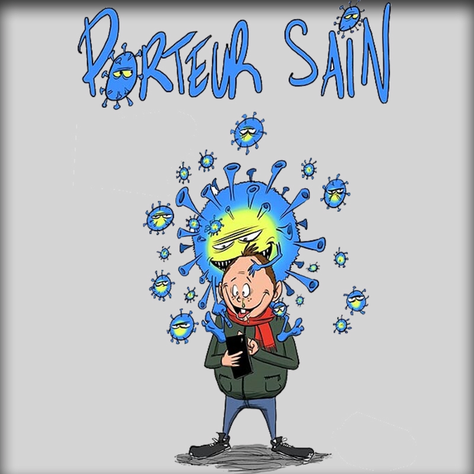

Raoult
Il dispose de deux atouts : un seul antidote pour soigner un joueur et un échantillon du covid-19 pour infecter un joueur.

Covid
Son objectif est de provoquer une grave infection capable de tuer tous les joueurs. Chaque nuit, il décide d'une cible à infecter…

Porteur Sain
Son objectif est d'être éliminé par le village lors du premier vote de jour. S'il réussit, il gagne la partie. Sinon, il devient un Simple Villageois.
Cible-Potentielle
Il ne dispose d'aucun pouvoir particulier : uniquement sa perspicacité et sa force de persuasion. Toutefois, tous les joueurs voient son rôle d'innocent.

Médecin
A sa mort, il a la possibilité d’infecter une personne.